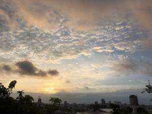
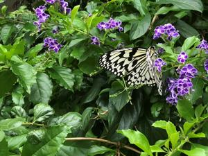

うるがいの話 ある日
最新: 理髪店【うるがいの話 ある日】とは 一日だけのプログです
『うるがいの話』の最新一日だけのプログで、通信料が少なく経済的だ。カニの画像をクリックすると全ての日付が載る『うるがいの話』サイトを表示します
|
|
【うるがいの話】 うるがい(ｳﾙｶﾞｲ urugai)とは、『もずくがに』の名前でとても大きくなります。 |
|---|---|
|
|
【カミマヤーの話】 猫のことを方言でマヤーといいます。カミマヤー（kamimayaa）とは、神の猫のことです。 |
|
【たながぁの音楽】 たながぁ（ﾀﾅｶﾞｰ tanagaa）とは手長えびのことで、何種類かあり大きいのは車 エビぐらいになります。 |

|
【ぶながぁの話】 ぶながぁ(ﾌﾞﾅｶﾞｰ bunagaa)とは、赤い髪の毛、赤い身体、そして身長は１ｍ２０ｃｍ ぐらい、川の蟹を食べているの目撃された。場所は沖縄県国頭郡大宜味村のと ある村僕の隣近所に住んでいる爺さんから、聞いた話です。 |
|
|
【ギーマの話】 ギーマ(giima)とは、山原の里山に咲くスズランに似た、 花を付けます。実は食べられます、 気が付くと口の周りが紫になっています。 |
2022年05月22日 (日）理髪店
14:53

『海の見える理髪店』という番組をみる。私の田舎にも、ランパチヤー（理髪
店）があった。酒癖の悪い親父で、怖かった。小さい頃、丸刈りのためそこへ
行くと、親父がふざけてバリカンを頭にごっつんと叩くのが嫌だった。高校か
らは、バリカンを持っている友達に刈ってもらったので、もう行くことはなか
った。高校生の夏、夜の海に懐中電灯を照らして浜から沖へ潜っていると、親
父がアフリカマイマイ（世界最大級のカタツムリ）を餌に仕掛けた延縄に４０
センチメートルほどの大きなタマン（フエフキダイ）が掛かっていた。いつの
ころだろう、理髪店の親父と家はとともに無くなっていた。私の父親は、辺士
名にある同級生の父親が営んでいる理髪店を、利用していた。テレビのドラマ
では、マッサージをやるシーンがあるがあれはいい！、いま利用している同じ
年頃の理髪店は、それはない。その前に利用していた年配の老夫婦が、営んで
いる理髪店はサービスしていた。ある日、そこの叔父さんの目が濁っているの
に気付き少し怖くなって今の床屋に変えた。ん、理髪店と床屋、散髪屋の違い
は・・・。ちなみ、私の台所からは海が見える。

１４時４８分 ビットコインの総資産 ￥１０、８８７↓